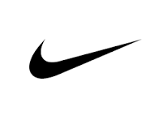

Barcelona
BarcelonaEl FC Barcelona, conocido popularmente como Barça, es un club de fútbol profesional con sede en Barcelona, Cataluña, España. Fue fundado en 1899 por un grupo de futbolistas suizos, ingleses y catalanes, liderados por Joan Gamper. El Barça se ha convertido en uno de los clubes más exitosos y admirados del mundo, conocido tanto por su estilo de juego distintivo como por su compromiso con los valores sociales y culturales de Cataluña.
A lo largo de su historia, el Barça ha ganado numerosos títulos nacionales e internacionales, incluidos múltiples campeonatos de La Liga, Copas del Rey y Copas de Europa. El club también es famoso por su cantera, La Masia, que ha producido algunos de los mejores futbolistas del mundo.

Patrocinadores oficiales del club
